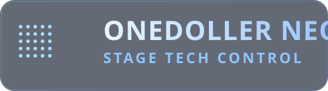
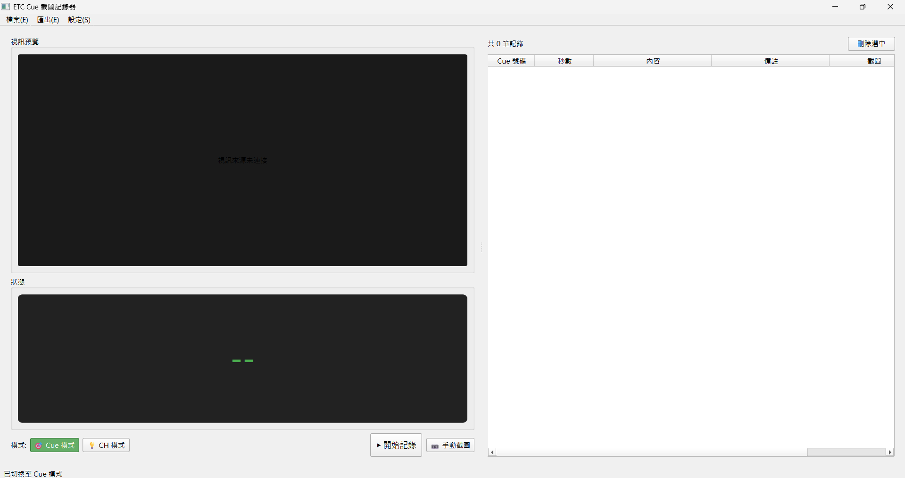

ETC CUE PHOTO
Auto Screenshot & Documentation for ETC Consoles
Cue Capture
CH Mode
RTSP / USB
PDF / Excel

ETC CUE PHOTOAuto Screenshot & Documentation for ETC Consoles

提供實用的排練記錄流程，降低手動截圖與交付整理的人力成本。
左右翻頁查看功能重點，每次聚焦一個項目。
一次完成截圖、整理與匯出，縮短演出後的文檔整理時間。